AVAILABLE FOR WEB DEVELOPMENT OPPORTUNITIES
Hello, I'm
Mitali
Talukdar.
Web Developer · MCA Graduate
I build clean, responsive and user-friendly web experiences with a focus on design and functionality.
GUWAHATI, ASSAM, INDIAFULL-STACK WEB DEVELOPMENT
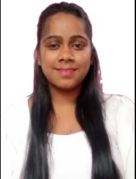
DESIGNMEETS
CODE ✳
CURIOUS MIND. PRACTICAL BUILDER.
HTML & CSS ✳ LARAVEL & PHP ✳ MYSQL ✳ RESPONSIVE WEB DESIGN ✳ REST APIS ✳ GITHUB ✳
01 / ABOUT MEA LITTLE ABOUT MY JOURNEY
Building useful
things for the web.
I'm an MCA graduate and software developer with hands-on experience in full-stack web development, backend development, REST APIs and database-driven applications.
During my internship, I contributed to Learnify, a digital learning platform, working with Laravel, PHP, MySQL, Flutter and REST APIs. I enjoy understanding how a product works from interface to database, and I’m continuing to grow as a developer with a strong interest in thoughtful, accessible web experiences.
MCACotton University
6 monthsInternship experience
GuwahatiAssam, India
02 / MY TOOLKITTECHNOLOGIES & TOOLS
Tools I use
to bring ideas to life.
A practical toolkit across frontend, backend, databases and development workflows.
Frameworks & UI
Web & APIs
Databases & Tools
03 / EXPERIENCEWHERE I HAVE CONTRIBUTED
JAN 2026 — JUN 2026 6 MONTHS
Web Development Intern
Indigi Consulting & Solution Pvt. Ltd.
Panjabari, Guwahati
- Contributed to Learnify, a digital learning platform, using Laravel, PHP, MySQL, Flutter and REST APIs.
- Worked on learning-management functionality and database-driven features.
- Developed and integrated REST APIs to support communication between application components.
- Contributed to Flutter mobile app development and Firebase Cloud Messaging integration.
- Used GitHub, Postman, XAMPP and VS Code in the development workflow.
04 / SELECTED PROJECTSLEARNING THROUGH BUILDING
A few things
I've worked on.
Projects that helped me apply development concepts to practical problems.
Learnify
A Digital Learning Platform
A digital learning platform with separate experiences for administrators and students, including course discovery, faculty applications, payment management and a companion mobile interface.
Screenshots below are from my Learnify project. The desktop views show the web platform; the portrait views show the mobile application.
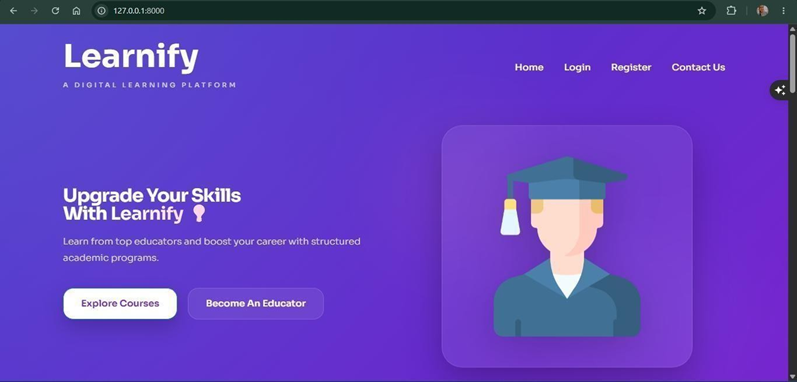
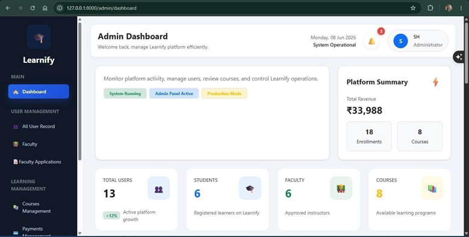
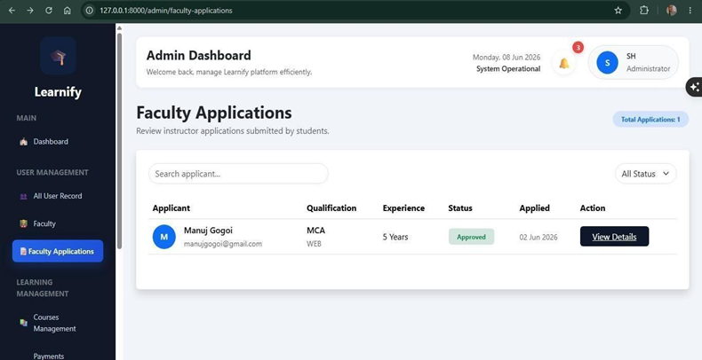
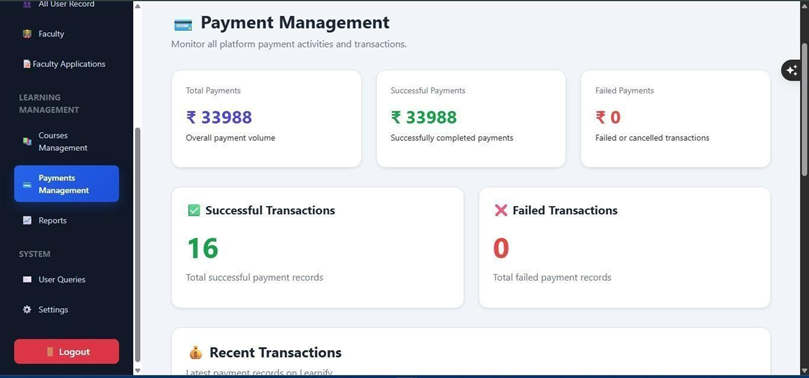
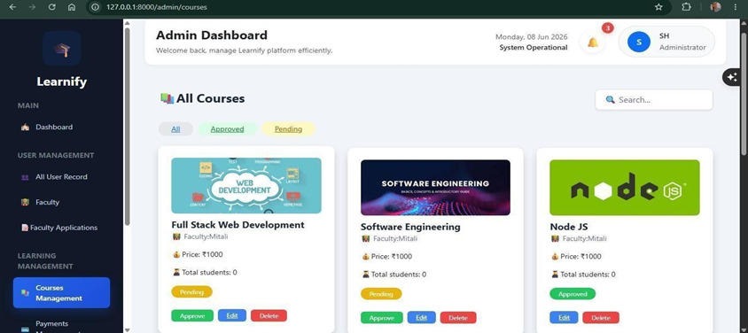
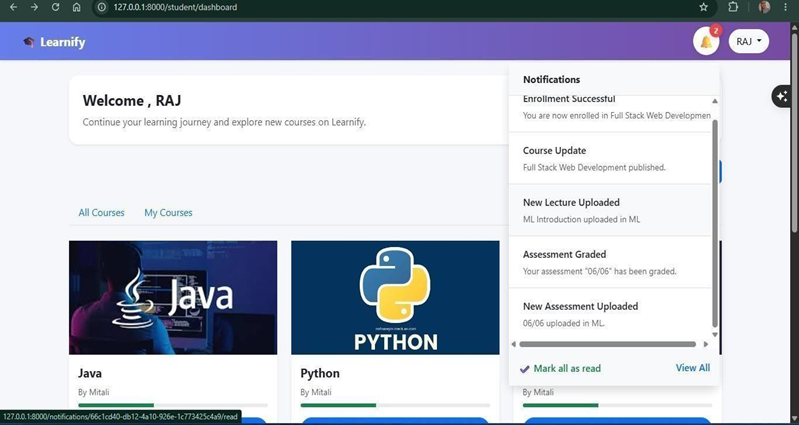
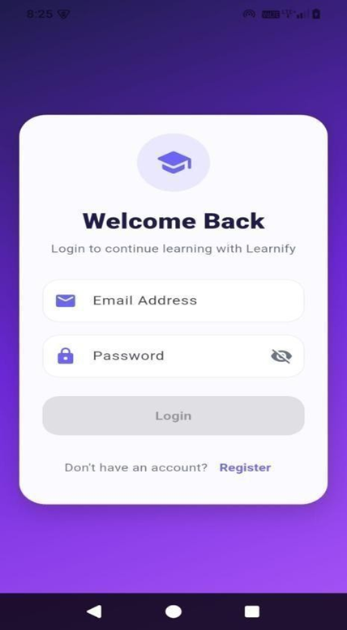
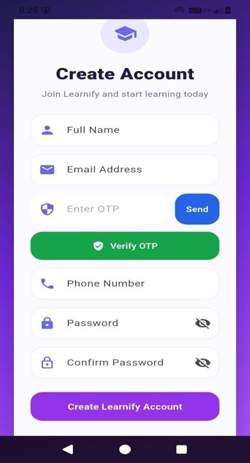
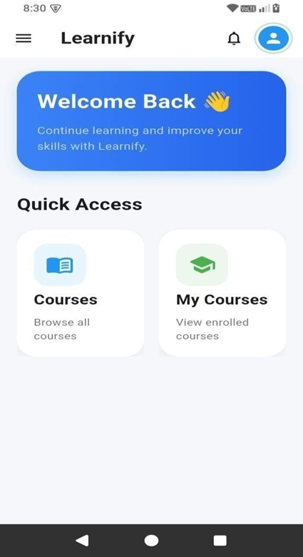
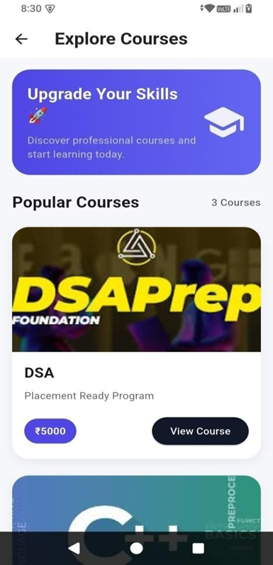
02
Online Attendance
Management System
A web-based system for recording, storing and monitoring student attendance.
✓ATTENDANCE
TRACKER
TRACKER
03
Multimodal Explainable AI Framework
A research-oriented framework for breast cancer diagnosis using multiple imaging modalities.
◉AI / IMAGE
ANALYSIS
ANALYSIS
05 / EDUCATIONACADEMIC BACKGROUND
Master of Computer Applications (MCA)
Cotton University, Guwahati
Bachelor of Computer Applications (BCA)
Dispur College, Ganeshguri · Gauhati University
Science
Secondary Education
06 / GET IN TOUCHOPEN TO OPPORTUNITIES
Have an idea?
Let's build it together.
I'm interested in web development opportunities where I can contribute, keep learning and build useful digital experiences.
mitalitalukdar8876@gmail.com ↗GUWAHATI, ASSAM, INDIA© MITALI TALUKDAR